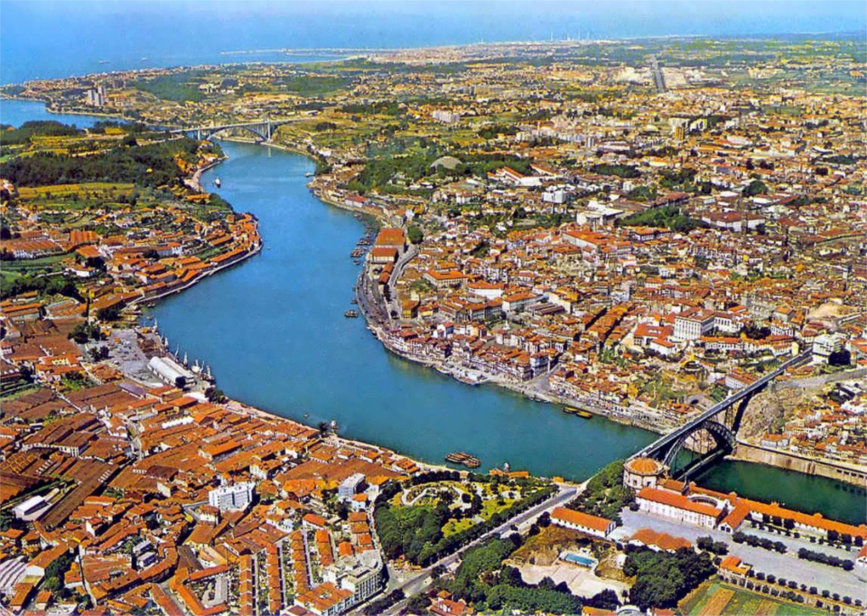
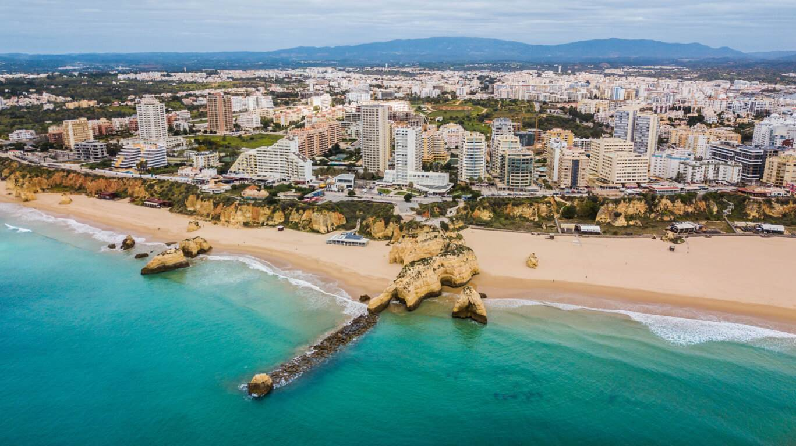
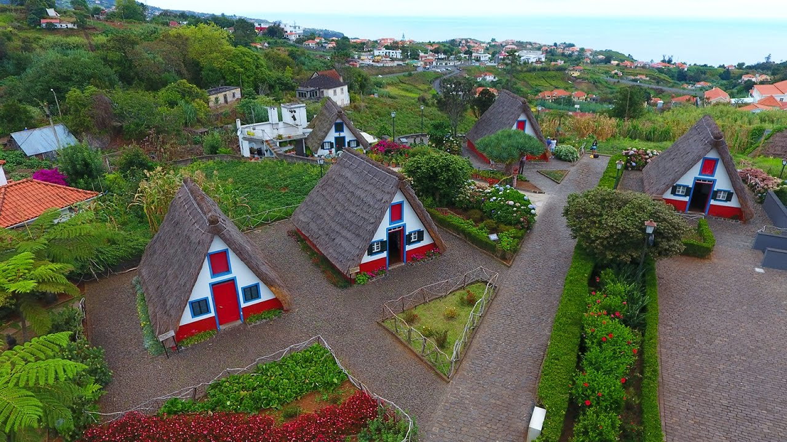

Explore os Destinos Turísticos de Portugal
Portugal é um destino que oferece uma variedade de atrações, desde a cultura vibrante das suas cidades históricas até às deslumbrantes paisagens naturais. Descubra os locais mais visitados e explore tudo o que estes destinos têm a oferecer.
Lisboa - A Capital Vibrante
Lisboa, a capital de Portugal, é uma cidade de contrastes, onde o antigo e o moderno se encontram em perfeita harmonia. Com os seus bairros pitorescos como Alfama e Bairro Alto, ruas repletas de história e monumentos como a Torre de Belém e o Mosteiro dos Jerónimos, Lisboa encanta visitantes de todo o mundo.
Além disso, a cidade é famosa pela sua gastronomia, como os famosos pastéis de nata e a vista deslumbrante sobre o Tejo. Não deixe de andar no tradicional elétrico 28 e de visitar o moderno Parque das Nações, o coração de Lisboa contemporânea.

Porto - A Cidade Invicta
Porto, ou "A Cidade Invicta", é famosa pela sua paisagem única, com as suas ruelas estreitas e empedradas, as pontes sobre o Rio Douro e as adegas de vinho do Porto. Esta cidade do norte de Portugal é um destino encantador, onde a tradição se mistura com a modernidade.
Os visitantes podem explorar a Ribeira, o centro histórico da cidade, classificado como Patrimônio da Humanidade, e disfrutar de uma experiência de degustação do famoso vinho do Porto. A gastronomia também é uma atração à parte, com pratos típicos como a francesinha e as tripas à moda do Porto.

Algarve - Sol e Praias Deslumbrantes
O Algarve, localizado no sul de Portugal, é o destino perfeito para quem procura sol, mar e paisagens deslumbrantes. Com as suas praias de areia dourada, águas cristalinas e falésias impressionantes, o Algarve é um paraíso para os amantes do turismo de praia.
Além das suas praias, o Algarve oferece uma rica gastronomia com destaque para os pratos de peixe fresco e marisco. A região também é famosa pelos seus campos de golfe e pela charmosa cidade de Lagos, com as suas ruas estreitas e históricas.

Madeira - O Jardim Flutuante do Atlântico
A Madeira é um arquipélago único no Atlântico, conhecido pela sua vegetação exuberante, paisagens montanhosas e clima ameno. Funchal, a capital, é um lugar encantador, com os seus jardins tropicais, mercados coloridos e a famosa exposição de flores.
A Madeira é também um destino ideal para os amantes da natureza, com muitos trilhos para caminhadas e observação de aves. As suas praias de águas calmas e as famosas levadas tornam-na um destino perfeito para quem busca tranquilidade e contacto com a natureza.
